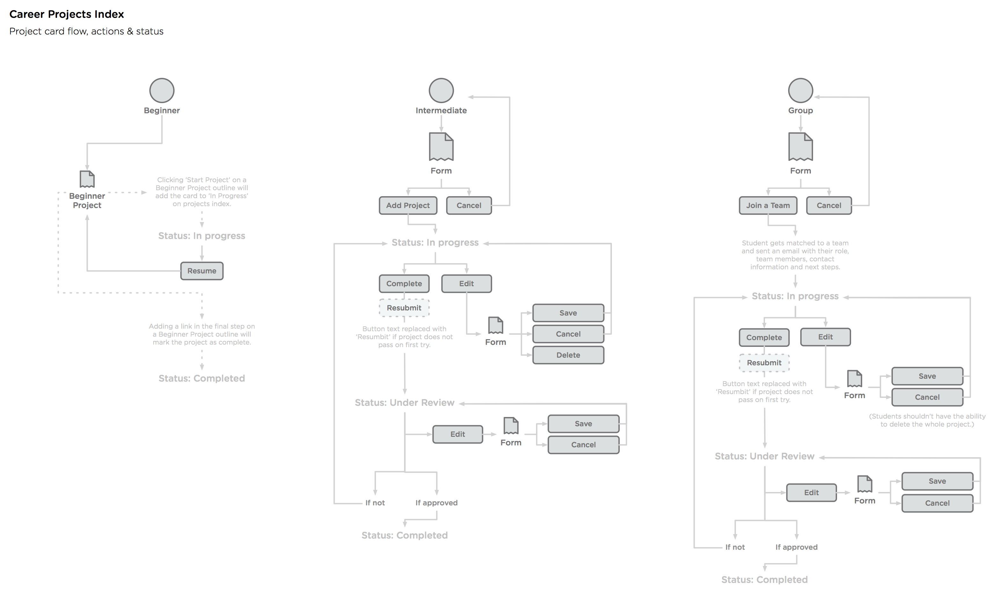
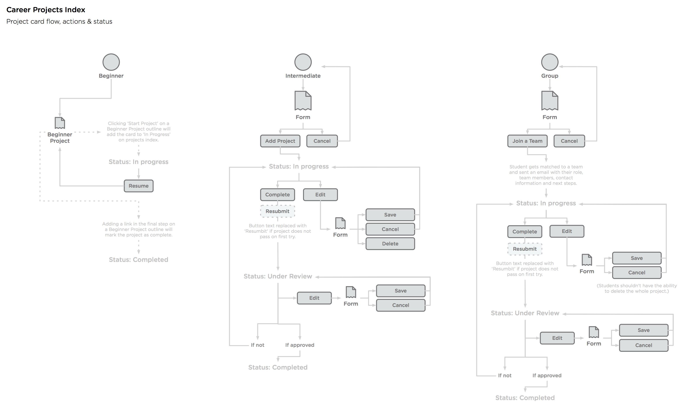

Creating a project based learning enviornment
This was an in-depth program provided by Treehouse aimed at getting Treehouse students the skills they needed to land jobs in the tech industry.
The Treehouse Career Program was an existing program when I joined the team, but it still lacked helping students develop fundamental job skills to help them get hired. Through auditing and talking with students, I identified that Treehouse students still lacked real-world skills and did not have a portfolio of work to show they were capable of the skills they knew. This problem could be solved through directing students to build projects, at first on their own, to gain problem solving skills, and then with teams, to gain skills in working in a team dynamic.
Process
I started the process by creating user flows for how a student would typically navigate through the projects portion of the career program. After that, wireframes are usually created to win over key decision makers and help them understand the experience without getting influenced by the design.
However, the key decision makers were already very familiar with the look and feel of our app. Since we already had a well-defined set of styles to use throughout the Treehouse app, I choose to prototype most all of my designs in code for quicker iterations. This helped me work closer with the developers on my team and get ideas tested sooner rather than relying on assumptions.
1. First iteration
I started out by designing a userflow to figure out how our students would complete the projects. These userflows documented both the entire career program and also the project learning portion. They helped inform business decisions on how to expand and redirect this program to become Treehouse Techdegrees. I advocated for building out the project-based learning system because my user research conducted with students found projects to be the fastest way to comprehend and grow new skills.
 
2. Design & Development
From there, I began mockup up the screens in code using our existing stylesheets. Using our own code made it really easy for me to get a sense for our system as a new team member and show in real-time what projects might look like to stakeholders. These screens created a prototype I used to pitch our leadership about the strengths of the program.
3. Second iteration
After we agreed on the flow and the basic designs, I started refining the visual designs and certain parts of the user experience. I ended up creating 3 custom icons that would start grayed out and get filled in with color as a student progressed futher by manipulating svg elements.
4. Project reviews
After we had students actively creating projects, we decided another important skill for them to learn was how to properly critique their peers work as well as receive feedback and improve upon their work. For this, we decided to implement a review system where students would receive feedback from both their peers and professionals.
Reviews meant allowing a somewhat complicated process, so I started out with a userflow detailing all the steps a student would take to complete a peer review while including the content I thought was necessary to each page or state.
As before, I did most of my work in code, occassionally using sketch to create new design patterns quicker and see how those would look before implementing. This approached was much faster and allowed for quick iteration.
Key takeaways
As I had access to two slack rooms where students were actively collaboration on projects, I was able to quickly understand their goals and how they worked to create systems that would benefit them. Easy access to students allowed me to interview and test ideas on real users, which helped me gather actionable data. These projects helped inform most of the work that was done over the span of a month to create Treehouse Techdegrees, as further iterations of both projects and reviews were added to the new Techdegree program.